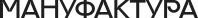
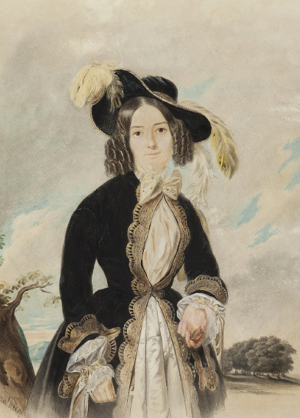

(2026)
Художественное пространство · с 1751 года

Миссия
Мы не конкурируем с онлайн-площадками — мы возвращаем
смысл посещения.
Мануфактура объединяет просвещение и коллекционирование в одном пространстве, где картину можно
рассмотреть,
а не пролистать